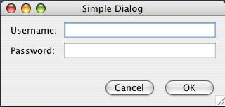
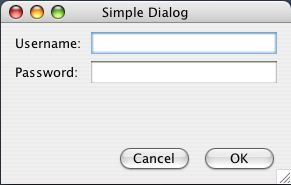
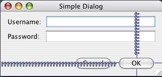

The layout managers that are included with Java Swing are either very easy to use, but too simple for real applications or very difficult to use but can possibly create real applications. Additionally, the more complicated layout managers also require reams of code to generate a layout and often require vast refactoring with any minor change.
The NeXT Interface Builder, now the Apple Interface Builder, upon which this layout manager is based, has a relatively simple set of constraints along with an excellent tool for drawing the interface. Once an object is placed, typically using the Apple L&F guidelines as a guide, you can set 6 different connections to either a strut or a spring. These are at the North, South, East, West, Width, and Height axes. When a component is resized, any axes that has a spring will get its share of the resized view. Though it differs from this layout manager in that it doesn't need to work with different Look&Feels so it is too limited for what we are trying to do. Requiring absolute positioning relevant for a single L&F was not an option in designing this layout manager. Also, NIB files were only designed to be built with the IB tool while this layout manager will be equally useful from the API without a fancy tool to guide you. One of the things you should note about the Apple Interface Builder is that it is flexible enough that virtually all applications written for the Mac use it to generate their user interfaces. Most platforms do not use the tools they offer their developers for creating their own applications. For example, you wouldn't be able to make any of the Microsoft applications with their GUI development tools, they are all completely custom.
In order to extend the IB model to a programmatic API you need to abstract two features of the tool that are done visually, the relationship of one component to another and components to their container. In IB you are given visual hints as to how far components should be to one another, when they are lining up, and when a component is the optimal distance from the edges of the container. These hints are key to making visually appealing interfaces that match the platform standards. Additionally, when people are placing the components they generally do so relative to other components on the surface, i.e. the Cancel button is to the left of the OK button. In IB, you don't need to add this layer of indirection, as the user can just place them on the surface that way. In a programmatic API you can give them the ability to directly specify these relationships between components. Also, by specifying relationships rather than placing components in a grid, you can move blocks of components without disrupting their visual relationships.
Let's build a fairly simple dialog that we would like to be able to resize properly. We'll give it a username and password label and field, an OK button, and a Cancel button in standard configuration. Here is what we would like the final result to look like:
| Normal: | Resized: |
|  |  |
Notice that in the resized case the buttons have stayed put in the lower right hand corner, the labels have stayed in the upper left and remain the same size, and the fields themselves are expanding/contracting with the resize. First we will setup for what we are going to do by creating all the components, this is almost always about the same no matter what layout manager you are using:
JFrame frame = new JFrame("Simple Dialog");
frame.setSize(320, 150);
JPanel panel = new JPanel(new NIBLayoutManager());
JLabel usernameLabel = new JLabel("Username:");
JTextField usernameField = new JTextField();
JLabel passwordLabel = new JLabel("Password:");
JTextField passwordField = new JPasswordField();
JButton ok = new JButton("OK");
JButton cancel = new JButton("Cancel");
Note that we have set the layout manager of the panel to the NIBLayoutManager. That is all you have to do to setup your panel to use it. The other thing that differs from most of the Swing layout managers is that for most layouts you need only one panel, even with complex resize mechanics. This simple layout will not be an exception to that rule.
We now will generate this user interface using the NIBLayoutManager. First we place the OK button on the panel:
panel.add(ok, new NC("nwbr"));
The NC class (short for NIBConstraints) is designed to make it possible to be very terse so your code is not swamped with GUI barf. This does give you some amount of "line noise" type code, but I've tried to give you a lot of options for how you actually use the classes. Let's expand out that line so we can see what it is doing in detail. The NC(String springs) constructor takes a string that is a series of boolean flags:
In our example we have placed springs between the component and the north and west sides. That means that if the container is resized and extra space created/removed will be added/taken from the distance between the component and the north/west edges. This will cause the component to stay put relative to the south/east edges of its container. Additionally, we have specified that the component will initially be placed in the bottom right corner of its container. Here is a visual representation of what we have said about the springs so far:
This springs and strut concept is similar to the springs and struts that are included as one of the layout managers that Swing includes, however, the implementation that they have is quite painful to use from the API and virtually no one uses it because it basically requires a tool. The NC contains quite a few shortcuts and aliases for doing various things, for instance, we could also do this the much more verbose way:
NC nc = new NC();
nc.n = true;
nc.w = true;
nc.b = true;
nc.r = true;
or a more smalltalk like way
NC nc = new NC().n().w().b().r();
Later we will see why there are so many aliases. Some things are easier to use in dynamic languages like Groovy vs. Java and I am designing this for a wide range of usages. Also, some people prefer terseness and others would like it spelled out for them. I am considering whether I should put the terse options in a subclass and keep all the verbose options in a superclass and let people choose their style that way. Initial feedback from some alpha users will probably decide it. Interestingly, you could always subclass the constraints yourself and set things up automatically with a wide range of defaults since everything is exposed.
Now lets continue generating the interface. Next we add the Cancel button:
panel.add(cancel, new NC("nwb").lo(ok));
The Cancel button is given the same springs as the OK button so it will stay put relative to the south and east sides of the container. Additionally it is placed along the bottom edge of the container and we specify that initially it will be to the left of the OK button. Take note that everything specified in the constraints besides the springs only affect the component for its initial placement on the container. Those constraints, like "bottom edge" or "left of" are not reevaluated each time the container is layed out. The biggest reason for this is performance of the code during resize, with only the springs affecting the location of the components there is remarkably little calculation required to determine the new location of components. The second reason is that there are a lot of ambiguities introduced if you do allow them all to be reevaluated with each layout of the container. This is something that is subject to reconsideration in the future if there is a good reason for it. It may at some point be an additional option to leave out springs altogether and simply use the relative constraints depending on user feedback. Tool support for "relative only" placement would also be awkward, but I'm not too worried about that right now.
Those buttons were nearly trivial and that's already a lot easier that doing it in other layout managers. Let's now look at adding the username label and field:
panel.add(usernameLabel, new NC("setl"));
panel.add(usernameField, new NC("sxt").awvco(usernameLabel).ro(usernameLabel).eet(panel));
Here we put the label in the upper left hand corner and set the springs to south/east. This is exactly the opposite of the OK button. More complicated is the username field itself. For springs we let the distance to the south edge expand with vertical resizing and the width of the field change when there is horizontal resizing. We then use one of the aliases awvco which stands for "align with vertical center of" to orient it verticaly even with the label and ro ("right of") the label. This positions where we want it. We then eet ("extend east to") the panel edge. When you use the "extend to" options and you specify a container it uses the container edges. When you specify another component in the panel, it will extend to that components edge initially. Again, after the initial placement and sizing the springs take care of what happens under when resized.
Now lets place the final two components, the password label and field, relative to our username label and field on the panel:
panel.add(passwordLabel, new NC("se").awro(usernameLabel).b(usernameField).swa(usernameLabel));
panel.add(passwordField, new NC("sxt").b(usernameField).awvco(passwordLabel).ro(passwordLabel).eet(panel));
We use a couple of new concepts here, awro ("align with right of") and swa ("same width as"). Because we don't rely on any sort of grid we must use the "same width/height" operations to ensure that things line up as we expect them to. Since preferred sizes are calculated before layout occurs you can forward reference components that are not yet layed out yet. In this example, we could have complicated things by using the more complicated construct mwo ("max width of") and given a set of username label and password label. This is very useful if you don't know the approximate sizes or the strings will be internationalized and you don't know which one will be bigger at compile time. Here is how that would look:
Component[] labels = new Component[] { usernameLabel, passwordLabel };
panel.add(usernameLabel, new NC("setl").mwo(labels));
panel.add(passwordLabel, new NC("se").awro(usernameLabel).b(usernameField).mwo(labels));
Now lets finish off the program by setting the content pane of the frame and making it visible:
frame.setContentPane(panel);
frame.setVisible(true);
That's all there is to it. There are tons of options available and they are described in detail in the javadocs. Usually a little experimentation is all it takes to figure out whats going on. Since the API is so complicated and this is early, you may find that some of the math is wrong or that there are still bugs in the system. Please report that to me.
You'll notice that when you place components there is some amount of space automatically put between them based on the platform L&F guidelines. This is similar to what IB does with its placement guides. Currently I have only implemented these for the Mac L&F, I would love to see what the Windows guidelines are for the distances between components and between a component and the edge of its container.
One of things in IB thats done very well is the ability to line up components with the baseline of the text contained within the components. Amazingly, Swing has a very vague grasp on this concept and that makes it very difficult to do in general. I have, however, included the ability to line up baselines between JLabels and JButtons, but other components do not have a baseline to line up with. I would like to fix this at some point but need some help from a great Swing wizard to do it.
Some UIs will invariably need tweaking on some platforms. In order to enable this, I've added nudges for the x and y directions that are applied after all other initial placements. These nudges should be used within a platform specific framework for exact movement of the components when things do not line up naturally for some reason.
By setting the frame of the component directly you can set the initial location of a component in absolute terms rather than relative to other components or the edges of the container. This is useful when you are building a UI for a particular platform and don't need the benefits of the relative positioning system. I discourage the use of this and hope that you give feedback to me on what further options are needed to get the flexibility that this provides.